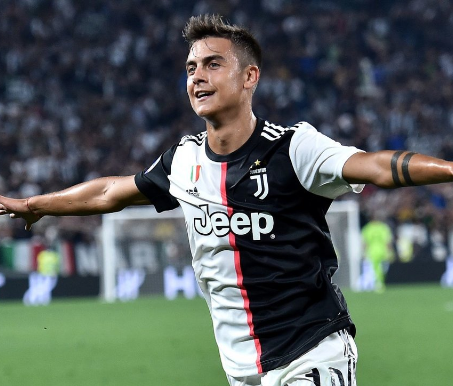

Conmebol
Copa America
2021


Neymar Jr
Neymar da Silva Santos Júnior (born 5 February 1992), known as Neymar, is a Brazilian professional footballer who plays as a forward for Ligue 1 club Paris.

Leo Messi
Leo Messi (born 24 June 1987) is an Argentine professional footballer who plays as a forward or an attacking midfielder.

Cristiano Ronaldo
Cristiano Ronaldo dos Santos Aveiro GOIH ComM is a Portuguese professional footballer who plays as a forward for Serie A club Juventus.

Paulo Dybala
Paulo Exequiel Dybala (born 15 November 1993) is an Argentine professional footballer who plays as a forward for Serie A club Juventus and the Argentina.

Mesut Ozil
Mesut Ozil is a German professional footballer who plays as an attacking midfielder for Süper Lig club Fenerbahçe. Nicknamed "The Assist King".

Mauro Icardi
Mauro Emanuel Icardi (Spanish pronunciation: [ˈmawɾo emaˈnwel iˈkaɾði]; born 19 February 1993) is an Argentine professional footballer.

Di Maria
Angel Fabian Di Maria (born 14 February 1988) is an Argentine professional footballer who plays for Ligue 1 club Paris Saint-Germain and the Argentina.

Kylian Mbappe
Kylian Mbappe Lottin (born 20 December 1998) is a French professional footballer who plays as a forward for Ligue 1 club Paris Saint-Germain and the France.

Mohamed Salah
Mohamed Salah Hamed Mahrous Ghaly is an Egyptian professional footballer who plays as a forward for Premier League club Liverpool and captains the Egypt.

Harry Edward Kane
Harry Edward Kane MBE (born 28 July 1993) is an English professional footballer who plays as a striker for Premier League club Tottenham Hotspur.

Kevin De Bruyne
Kevin De Bruyne (born 28 June 1991) is a Belgian professional footballer who plays as a midfielder for Premier League club Manchester City.

Philippe Coutinho
Philippe Coutinho Correia (born 12 June 1992) is a Brazilian professional footballer who plays as an attacking midfielder or winger for Spanish club Barcelona.